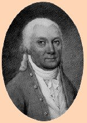
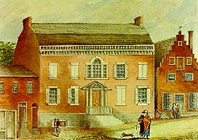

John Stevensonby
John Stevenson was born in 1734, the son of city treasurer James Stevenson and Sara Groenendyck - whose father was a former Albany sheriff. Although his mother died when he was ten, this able child of advantaged newcomers grew up in a comfortable Albany home and represented his father on the frontier and then in the import trade.  While his brothers left home for frontier adventure and military careers, John Stevenson touched all the bases for a successful early Albany life. In 1763, he had served as a firemaster, then in the militia, and generally represented his father in business ventures that often took him far away from Albany - to Detroit, Pittsburgh, into Canada, and even to Jamaica. Like his father, he too imported iron and steel and assorted metalware. He also acted as an agent for eastern New York lands. After his father's death in 1769, he expanded the State Street holdings, acquired additional lots above the city along Lion Street, and also took steps to patent some frontier land for himself. As the eldest son, he was named executor and principal heir of his father's estate. Probably owing to frequent absences from home, John Stevenson did not marry until he was thirty-five. In 1770, he wed Magdalena Douw, the twenty-year-old daughter of Mayor Volkert P. Douw. The union joined one of Albany's best-connected British families with the Douws whose roots went back to the earliest days of the community. The couple took up residence on upper State Street just below St. Peter's Anglican Church where John was a church warden. Within a few years, John and Magdalena were planning to build a much larger home on the same location to accommodate his now Albany-based business and their growing family. On the eve of the Revolution, Stevenson's prospects seemed bright. However, his family was too closely connected to the British and even the superb standing of the Douw family did not exempt him from difficulty during the 1770s. In 1766, the Stevensons were able to diffuse charges that John had applied for the position of Stamp Tax collector. Although he sought to succeed his father as Treasurer, he was rebuffed by the city fathers. Eight years later, he was unable to conceal the fact that he considered himself "a subject of the king." By 1777, Stevenson realized his position in Albany was becoming untenable. But he was unwilling to defect to the British without providing for his family and property. In January 1777, he asked the Albany Committee for permission to remain in Albany until his "affairs are in order." The committee denied his request and sent him under guard to Boston. He spent parts of the next year in New England - loosely confined but restricted in an arrangement called "parole."During the years that followed, Stevenson was never comfortable in his living situation. With any importing suspended and the frontier closed to trade, he scrambled for a livlihood in wartime Albany. Under constant scrutiny, each refusal to sign an oath of allegiance was met with threats of deportation or incarceration on a prison ship. But John Stevenson's roots were in Albany. His wife and children survived the war with the help of Magdalena's family. Although not a supporter of the American cause, he had taken no overt part in opposition to it. After the war, Stevenson was able to resume his pre-war life. He completed the grand home on upper State Street - a new-style ediface that was so striking it prompted artist  James Eights later to title his painting of it "A Rich Man's Dwelling." From that majestic vantage point, Stevenson resurrected his career and continued to prosper. No longer an importer, he joined with other Albany entrepreneurs to open a nail manufactory on lower State Street in 1787. Other manufacturing ventures followed. In 1792, he was named one of the original directors of the Bank of Albany. Prominent member of the community, pillar of the now Episcopal Church, first president of the Albany St. Andrew's Society, and a steady contributor to other community improvement initiatives, he lived to see his children grow up and marry. Son James Stevenson followed in his father's footsteps and was elected mayor of Albany in 1826. In 1800, his household included five members and was served by nine slaves. John Stevenson suffered a stroke on an Albany street and died in 1810. Magdalena Douw Stevenson lived in their landmark home until her death in 1817. In 1859, workmen clearing away the ruins of St. Peters Church discovered the coffin of the elder James Stevenson (John's father) and the remains of five of John and Magdalena's children buried beneath a silver plate which John Stevenson had inscribed with burial information. It was dated July 1802. At that time, St. Peter's was without a rector and Senior Warden Stevenson had taken charge of the management of church affairs. Among the metal products imported by the Stevensons were: brads, brass mountings, locks, hinges, screw plates, and pewterware. John's father's fortune was due in large part to his ability to supply army outposts and the Indian Commissioners. By the 1820s, Lion Street had been renamed Washington Avenue. During the middle of the eighteenth-century this road leading to Schenectady was better known as "The King's Highway." A "parole" was a signed promise of good behavior which often included a monetary bond and/or the sworn support of a more upstanding member of the revolutionary community. Watercolor entitled "A Rich Man's Dwelling". Print in the Graphics Archive of the CAP. first posted 4/4/00; recast and revised 6/25/13
|